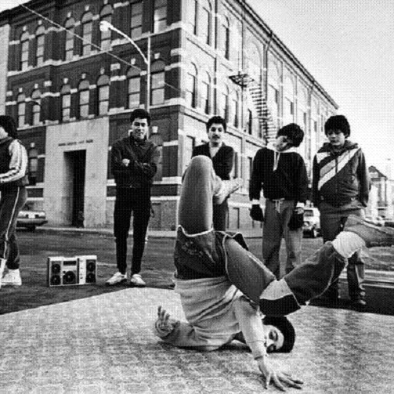
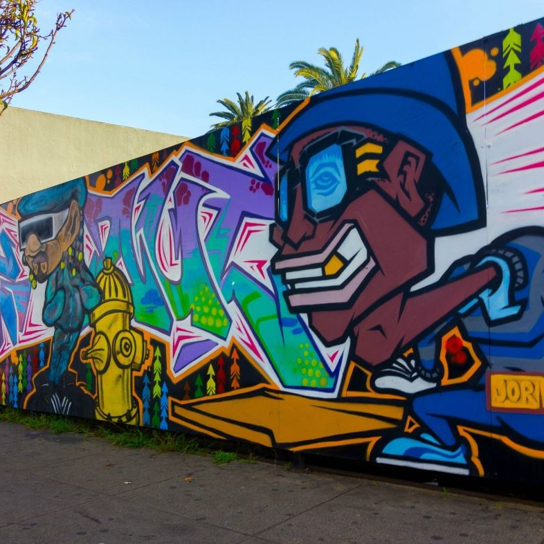
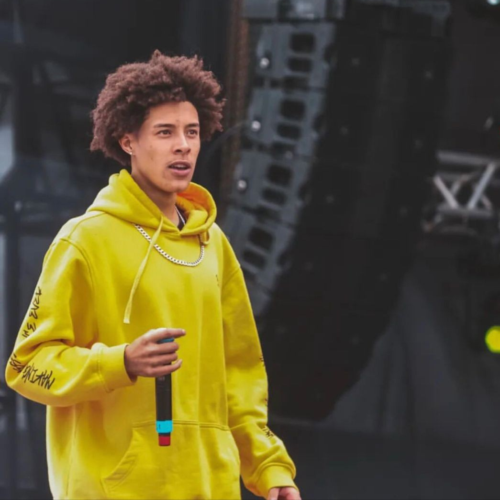
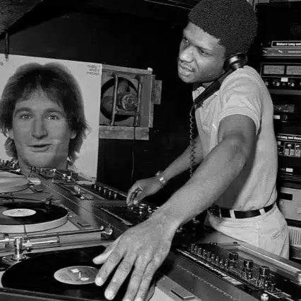

O que são os pilares?
Os pilares do Hip-Hop são os elementos fundamentais que compõem e definem essa cultura.
O Hip-Hop é um movimento cultural e artístico que se expressa através de várias formas, incluindo música, dança, arte visual e moda. Ele começou como uma forma de resistência e expressão nas comunidades marginalizadas, abordando questões sociais, políticas e econômicas.
Os quatro pilares do Hip-Hop são:
-
4- Breaking: Uma forma de dança acrobática que combina movimentos fluidos com técnicas de improvisação.
Breaking, também conhecido como breakdance, é um estilo de dança criado por jovens em comunidades urbanas nos Estados Unidos. Ele mistura movimentos rápidos no chão, giros e poses acrobáticas com muita energia e criatividade. Mais do que uma dança, o Breaking é uma forma de mostrar personalidade, força e expressão através do corpo, muitas vezes acompanhado por batidas marcantes do Hip-Hop.
-
3- Graffiti: A expressão artística em espaços públicos, muitas vezes abordando temas sociais e políticos.
O graffiti é uma forma de arte urbana que utiliza paredes e espaços públicos como telas. Ele começou como uma maneira de jovens expressarem suas ideias, sentimentos e críticas sociais. Com o tempo, o graffiti evoluiu para incluir estilos complexos, técnicas de spray e mensagens poderosas, tornando-se uma parte essencial da cultura Hip-Hop.
-
2- MCing: A prática de rimar e contar histórias através da música.
MCing, ou "mestre de cerimônias", é a arte de fazer rap. Os MCs são como poetas urbanos: usam palavras rimadas para contar histórias da vida real, falar sobre injustiças sociais e políticas, e valorizar a cultura das ruas. Através da música e da fala, eles dão voz às experiências e sentimentos de quem vive nas periferias.
-
1- DJing: A arte de criar música usando turntables e mixers.
O DJing é a base musical do Hip-Hop, onde DJs usam toca-discos e mixers para criar batidas, samples e efeitos sonoros. Eles são os responsáveis por manter a energia nas festas e eventos, misturando músicas e criando novas composições ao vivo. O DJing é uma forma de arte que combina técnica, criatividade e conhecimento musical. Não é só apertar botões — é saber ler o clima, criar um som único e dar ritmo à cultura.
Lembre-se:
Esses pilares não são apenas formas de arte — eles são o grito de quem foi silenciado, a criatividade de quem fez beleza com quase nada, a resistência de comunidades inteiras que transformaram dor em força. Cada rima, cada batida, cada traço no muro ou movimento de dança carrega histórias de exclusão, esperança e identidade. O Hip-Hop não nasceu em palcos, mas nas esquinas, nas vielas, nos becos esquecidos. É cultura viva, pulsante, que ecoa os sonhos e as lutas de quem, mesmo sem espaço, sempre encontrou um jeito de ser ouvido.